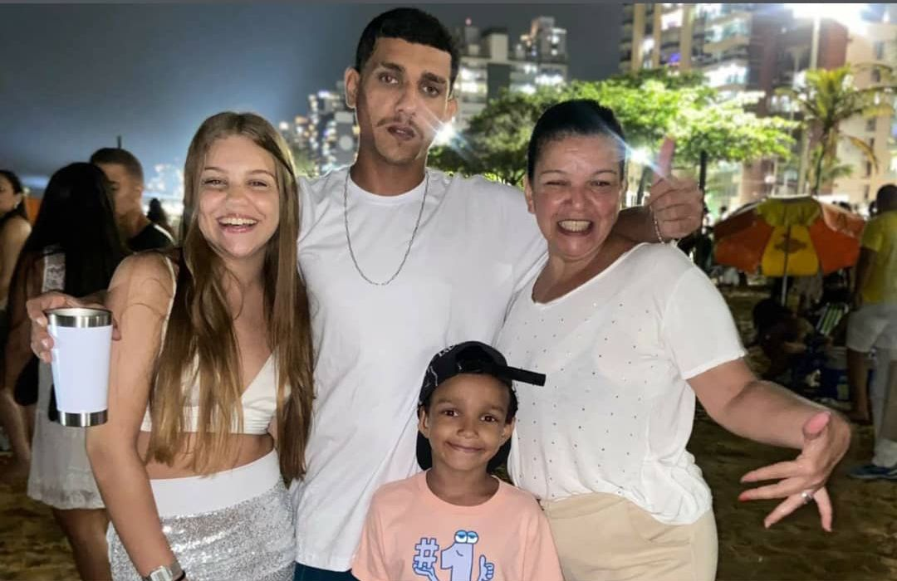

meu nome é Gabriela Knaak,fiz esse blog para apresentar meu curriculo na web.
Curiosidades sobre mim:
Tenho 15 anos;
Sou voluntária no CRJ Cariacica nos finais de semana; Sou amigável;
Fiz natação por 2 anos.
sobre mim
Nasci em VItoria-ES,no ano de 2008.
Cresci em Vila-Velha-ES.
Atualmente moro em Cariacica-ES.
Estudo na EEEFM Ana Lopes Balestrero.
Minha família:

Essa é minha mãe (Alexandra) e esses são meus irmãos (Gabriel e Cadu),
além deles tenho mais três irmãos por parte de pai,mas desde o falecimento do meu pai não tenho
contato com eles.
Atualmente moro com minha mãe e meu irmão mais novo e nos finais de semana nos encontramos com meu
irmão.
Minha família é bem grande mas só nos encontramos em datas comemorativas.
Tenho minha mãe como uma grande fonte de inspiraçao,pois mesmo com todas as dificuldades da vida, criou 3 filhos sozinha e nunca deixou nos faltar nada.
Formação Acadêmica
Cursando 1° ano do ensino medio,com itinerario em midias digitais, na escola EEEFM Ana
Lopes
Baletrero.
Conclusão: Dezembro/2026
Curso: Senac: Técnico em informatica para internet.
Conclusão: Junho/2025
Completei o ensino fundamental no ano de 2023,com 15 anos de idade.
Níveis de Conhecimentos:
HTML
60%
CSS:
50%
JAVA SCRIPT:
0%
Objetivo Profissional:
Após o fim do ensino médio pretendo cursar medicina na UFES e depois de aluguns anos
de residência irei me especializar em cirurgia plástica.
Pretendo amplificar meu conhecimento sobre TI.